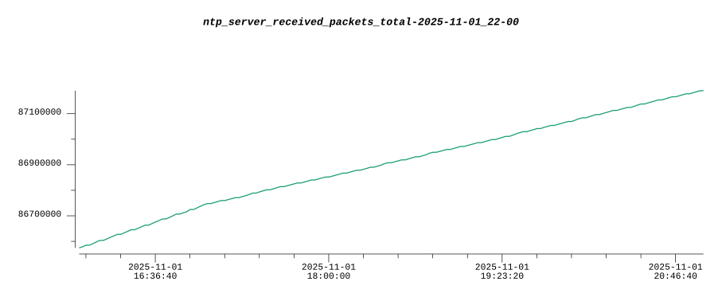
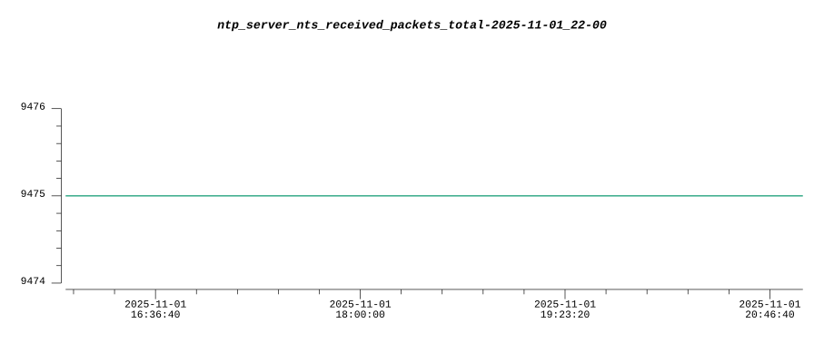

NTPSecure uses a mix of Network Time Protocol and Network Time Security server.
Network Time Protocol (NTP) is a networking protocol designed to synchronize the clocks of computers and devices over a network, ensuring accurate and consistent timekeeping across distributed systems. It operates primarily over the User Datagram Protocol (UDP) on port 123 and is defined in RFC 5905 (and earlier RFCs).
Network Time Security (NTS) is a security framework for the Network Time Protocol (NTP), designed to protect time synchronization against attacks such as spoofing, man-in-the-middle (MITM), and replay attacks. Defined in RFC 8915, NTS ensures the authenticity, integrity, and confidentiality of NTP communications over untrusted networks, addressing vulnerabilities in traditional NTP implementations.
NTP - Technical Overview
NTP enables precise time synchronization by exchanging timestamped messages between a client and a time server (or a hierarchy of servers). It uses a hierarchical structure of time sources, organized into strata:
Stratum 0: High-precision time sources, such as GPS receivers or atomic clocks, directly connected to a computer or device.
Stratum 1: Servers directly synchronized with Stratum 0 devices (e.g., via GPS or radio signals).
Stratum 2 and higher: Servers synchronized with higher strata, with increasing distance (and potential latency) from the primary time source.
Key Mechanisms
1. Timestamp Exchange
NTP uses a client-server model where the client sends a request packet containing a timestamp (T1, the client's local time when the request is sent). The server responds with a packet containing:
T1 (client's original timestamp)
T2 (server's receipt time)
T3 (server's transmission time)
The client records T4 (its local time when the response is received). These four timestamps allow the client to calculate:
Round-trip delay: δ = (T4 - T1) - (T3 - T2)
Clock offset: θ = [(T2 - T1) + (T3 - T4)] / 2
The offset is used to adjust the client's clock, and the delay helps estimate network latency.
2. Clock Discipline Algorithm
NTP employs a clock discipline algorithm to adjust the local clock gradually, avoiding abrupt jumps that could disrupt applications. It uses a combination of:
Phase-locked loops (PLL)
Frequency-locked loops (FLL)
These stabilize clock corrections over time, accounting for clock drift and jitter.
3. Hierarchical Synchronization
NTP clients can synchronize with multiple servers to improve accuracy and reliability, using algorithms to select the best time source based on factors like stratum level, network delay, and server quality. Key algorithms include:
Intersection algorithm: Filters out "falsetickers" (servers with incorrect time).
Clustering algorithm: Combines data from "truechimers" (reliable servers).
4. Packet Structure
NTP packets are 48 bytes (minimum) and include fields such as:
Leap Indicator: Signals leap second adjustments.
Version Number: Specifies the NTP version (e.g., NTPv4).
Mode: Indicates client, server, or broadcast mode.
Stratum: Indicates the server's stratum level.
Reference ID: Identifies the time source or server.
Timestamps: Originate, Receive, Transmit, and Reference timestamps.
Modes of Operation
Client-Server: The client requests time from a server and adjusts its clock.
Symmetric: Two peers synchronize with each other (used between servers).
Broadcast/Multicast: A server periodically sends time to multiple clients, suitable for LANs with less precision.
Manycast: Clients discover nearby servers via multicast for synchronization.
Precision and Accuracy
NTP can achieve sub-millisecond accuracy in ideal conditions (e.g., LANs with low latency). Accuracy depends on:
Network stability
Server quality
Client's clock hardware
In wide-area networks, accuracy is typically in the range of milliseconds due to variable latency.
Security
NTP supports authentication mechanisms, such as:
Symmetric key cryptography
Autokey (in NTPv4)
Vulnerabilities like DDoS amplification (e.g., via monlist queries in older implementations) have led to recommendations for securing NTP servers.
Implementations
Common NTP implementations include:
ntpd: Reference implementation daemon.
chronyd: Optimized for intermittent connectivity.
SNTP: Simplified NTP for devices requiring less precision.
Applications
Distributed systems (e.g., databases, blockchain) for event ordering.
Network logging and monitoring for consistent timestamps.
NTP is a robust, scalable protocol for synchronizing clocks across networks, leveraging timestamp exchanges, hierarchical strata, and sophisticated algorithms to achieve high precision and reliability in diverse environments.
NTS - Technical Overview
NTS extends NTP by integrating cryptographic mechanisms to secure time synchronization. It operates in two primary components:
NTS Key Establishment (NTS-KE): A protocol for securely negotiating cryptographic keys and parameters between an NTP client and server.
NTS-protected NTP messages: NTP packets augmented with extensions for authentication and integrity protection.
NTS is designed to be backward-compatible with NTPv4, using NTP extension fields to carry security-related data without disrupting legacy clients or servers.
Key Components and Mechanisms
1. NTS Key Establishment (NTS-KE)
NTS-KE is a separate protocol that runs over Transport Layer Security (TLS) (typically on TCP port 4460) to establish cryptographic keys and negotiate parameters before NTP time synchronization begins. The process includes:
TLS Handshake: The client and server establish a secure TLS session, authenticating the server using X.509 certificates (client authentication is optional).
Parameter Negotiation: The client and server agree on:
Application-Layer Protocol Negotiation (ALPN), identifying the protocol as ntske/1.
Supported cryptographic algorithms (e.g., AES-SIV-CMAC for authentication).
NTP server address and port for subsequent time synchronization.
Key Derivation: The TLS session generates shared keys, which are exported using the TLS key exporter (per RFC 5705) to create:
C2S key: For authenticating client-to-server messages.
S2C key: For authenticating server-to-client messages.
Cookie Exchange: The server provides the client with encrypted "cookies" containing key material and configuration data. These cookies allow stateless operation for the server, enabling scalability.
After NTS-KE, the TLS session is closed, and the client uses the negotiated parameters and keys for NTP communication.
2. NTS-Protected NTP Messages
Once keys are established, NTP messages are secured using NTPv4 extension fields. The key mechanisms include:
Authentication and Integrity: NTS uses the Authenticated Encryption with Associated Data (AEAD) algorithm (typically AES-SIV-CMAC-256) to protect NTP packets. Each packet includes:
An NTS Authenticator and Encrypted Extension Fields extension, containing a message authentication code (MAC) to verify integrity and authenticity.
A unique nonce to prevent replay attacks.
Cookie Mechanism: Clients include a cookie in NTP requests, allowing the server to reconstruct the necessary cryptographic context without maintaining per-client state.
Optional Confidentiality: While NTS primarily focuses on authentication and integrity, sensitive extension fields can be encrypted using the AEAD algorithm.
The standard NTP header and timestamps remain unencrypted to ensure compatibility and allow intermediary devices (e.g., routers) to process packets.
3. Security Guarantees
NTS provides the following protections:
Server Authentication: TLS certificates verify the server's identity, preventing spoofing.
Message Integrity: AEAD ensures that NTP packets are not tampered with.
Replay Protection: Unique nonces in each packet prevent attackers from reusing captured packets.
Protection Against Delay Attacks: By authenticating timestamps, NTS mitigates attacks that manipulate perceived network latency to skew time.
Scalability: The cookie mechanism allows servers to remain stateless, supporting large numbers of clients.
Operational Modes
NTS supports the same NTP modes as NTPv4, including:
Client-Server: Most common, where a client synchronizes with an NTS-enabled server.
Broadcast/Multicast: Limited support, as these modes are less secure and less commonly used with NTS.
Symmetric Mode: Supported for peer-to-peer synchronization, with mutual NTS-KE sessions.
Performance Considerations
NTS introduces some overhead compared to traditional NTP:
TLS Handshake: The initial NTS-KE phase requires a TLS session, adding latency (typically a one-time cost).
Computational Cost: AEAD computations require additional CPU resources, though modern hardware handles this efficiently.
Despite this, NTS is optimized for scalability and minimal impact on time synchronization accuracy.
Implementations
NTS is supported in modern NTP implementations, including:
ntpd: The reference NTP daemon (from NTPsec or OpenNTPD).
chronyd: A lightweight NTP implementation with robust NTS support.
ptpd: Precision Time Protocol daemon with NTS extensions in some versions.
Public NTS-enabled time servers are available (e.g., those operated by Cloudflare or Netnod), and clients can configure NTS using standard NTP configuration files.
Limitations
While NTS significantly improves NTP security, it has some limitations:
Dependency on TLS: NTS relies on a robust Public Key Infrastructure (PKI) and trusted certificates, which can be a point of failure if misconfigured.
No End-to-End Confidentiality: NTP timestamps remain unencrypted to maintain compatibility, so NTS does not protect against passive eavesdropping of time data.
Adoption: Not all NTP servers or clients support NTS, requiring fallback to less secure mechanisms in mixed environments.
Applications
NTS is critical in environments requiring secure and accurate time synchronization, such as:
Financial Systems: For timestamping transactions and compliance (e.g., MiFID II).
Telecommunications: For synchronizing 5G networks and IoT devices.
Distributed Systems: For consistent event ordering in databases and blockchain.
Critical Infrastructure: For securing power grids and transportation systems.
Summary
Network Time Security (NTS) is a robust extension to NTP that secures time synchronization using TLS-based key establishment and AEAD-protected NTP messages. By providing authentication, integrity, and replay protection, NTS mitigates critical vulnerabilities in traditional NTP, making it suitable for high-security applications while maintaining compatibility and scalability.
NTP Server Received Packets Total
NTS Server Received Packets Total
NTP-2 Server Received Packets Total

NTS-2 Server Received Packets Total

The server config consists of 4 ntp servers, from switzerland and one nts server for stratum 1 sync.